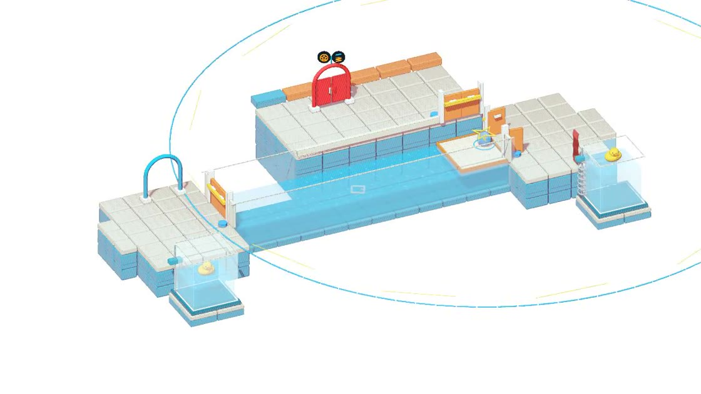
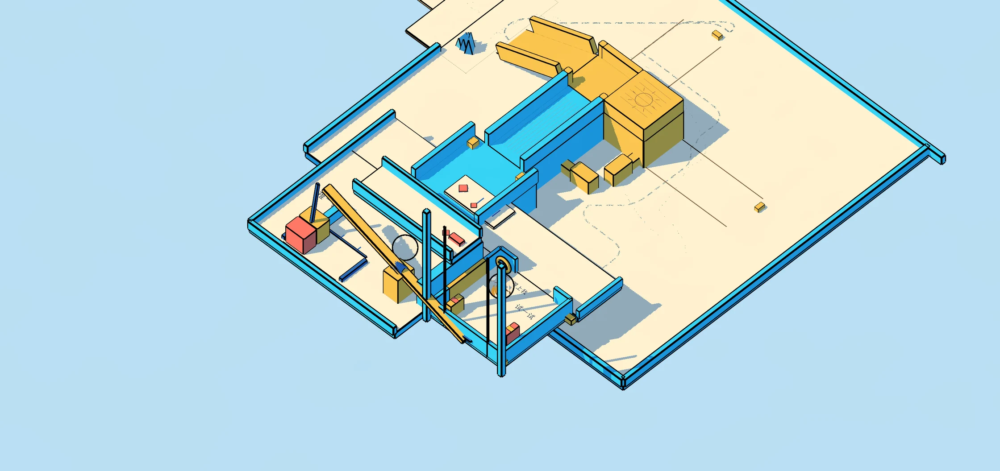
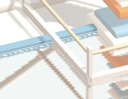
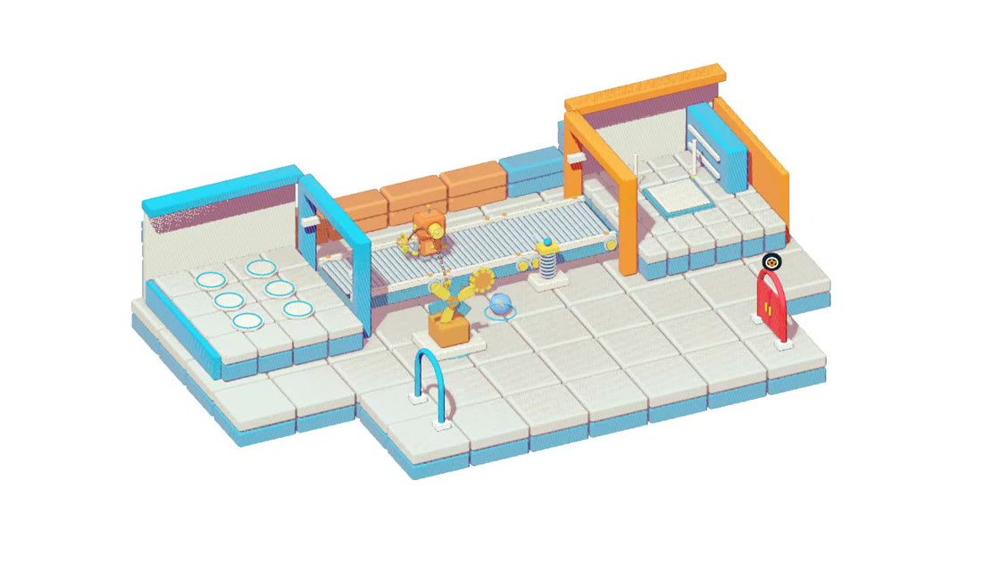

02 初次同行（无字教学）：两条并行走廊天然隔开两名角色，让彼此互相开门成为刚需。玩家在推进中分三步无痛建立完整认知：先传播门闩长度（空间尺度），再借聚光灯改变亮星数量并同步给星锁（数量属性），最后复制翼锁的展翼形态（离散状态），并在过程中自然发现“已经改变的物件可以再次作为参照”。


一款以玻璃珠与折纸为核心的双角色空间解谜游戏——一个负责近身改变物件尺度，一个负责隔空传递状态，让玩家在站位、距离与机关反馈中发现彼此的必要性。
《玩具岛 TOYDUET》创作于 2026 年 11 月 thatgamejam #02，由我与队友 THISHI 两人共创并以 Godot 完成玩家版（全作共 14 关，我独立负责其中 8 个关卡的空间、机关、解法与教学设计，其余 6 关由队友设计）。玩家在玻璃珠与折纸之间自由切换，通过改写旧玩具的物理与行为属性打通前路。

接手关卡扩展时，队友的第一版 Demo 里并没有折纸这一角色——最初的形态是玩家操控一颗玻璃珠，另一颗珠子仅具备自动跟随或暂停功能；角色本身没有主动能力，解谜完全依赖关卡内预设的杠杆、滑轮与压板等物理道具。

为了把“双人同行”从跟随关系变成真正的机制互赖，我重新设计并确立了一套互补的双角色能力体系：
折纸（本地状态改变者）：必须近身靠近目标物件，才能调整其物理尺度或行为形态（如长度、高度、磁场范围、视野范围、摆动节拍或纸构件结构）。它的优势是“能够创造新状态”，局限是“必须亲身抵达现场”。
玻璃珠（有向状态传递者）：在作用范围内先选定参照物、再选定接收物，将前者的属性同步给后者；连接断开后，接收物会保留已传递的状态，并能继续充当下一跳的新参照。它的优势是“跨空间传递与状态留存”，局限是“无法凭空造出原本不存在的状态”。
两种能力叠合后，每一关的解谜都变成了「谁能站到哪里 → 先改哪件物体 → 按什么方向传递 → 断开后如何保留状态去接回同伴」的空间编排。在正式铺开 8 个关卡前，我先通过「风琴书桌 III」原型验证了这套规则的泛化潜力——确认“改尺度 + 传属性”不仅适用于书本高度与进深等空间变量，也能自然延伸到指针表所代表的时间维度。
围绕同一套双角色规则，我把 8 个关卡按「建立规则 → 转换对象语义 → 制造同伴留守困境」逐步推进。以下三关分别对应这一演进中的三个关键节点（页面同时标注开发期设计稿/可玩网页原型与 11.07 Godot 玩家版演示）：
02 初次同行（无字教学）：两条并行走廊天然隔开两名角色，让彼此互相开门成为刚需。玩家在推进中分三步无痛建立完整认知：先传播门闩长度（空间尺度），再借聚光灯改变亮星数量并同步给星锁（数量属性），最后复制翼锁的展翼形态（离散状态），并在过程中自然发现“已经改变的物件可以再次作为参照”。
05 磁力玩具台（机制语义的关卡内转折）：前半段由折纸调整磁场范围推动轨道屏风作为物理掩护，借掩护绕至侧面缩短机器人 A 的视野；推进至中后段时，单纯的物理遮挡不再够用，关卡借此引导玩家完成一次认知跃迁——把“复制对象”从环境物件转向机器人自身的扫描朝向，依次执行 C→B 与 A→C 的朝向同步，从“躲视野”升级为“改朝向”。


11 双箱船闸（状态留存与同伴关系）：左岸水箱仅能支撑低岸通行，右岸水箱虽能制造高水位却带有自动回位结构，迫使折纸必须离船留在右岸维持水位。玻璃珠借此先行抵达高岸，将水道的高水位反向存回左箱，随后降下水位接回同伴，最终凭左箱保存的高水位共同抬船通关。站位限制、有向传递与“断开后保留状态”三条规则在这里彻底咬合。
全作共 14 关，下表梳理了我独立负责的 8 个关卡（发行序号 01 / 02 / 05 / 06 / 08 / 11 / 13 / 14，其余 6 关由队友设计），呈现同一组基础动作如何依次拓展至长度、磁场、物理连锁、节拍相位、水位反存与镜面倒影，并附上 4 个可交互 HTML 历史原型与玩家版演示。
| 发行序号 | 关卡 | 玩家在这里理解什么 |
|---|---|---|
| 01 | 第一道折痕 | 把风扇的转动传给发条，第一次建立属性连接。观看 11.07 玩家版录像 |
| 02 | 初次同行 | 用长度、亮星数量与展翼形态互相开路。 |
| 05 | 磁力玩具台 | 从借屏风改变接近条件，到同步扫描朝向。 |
| 06 | 多米诺接力 | 将转动传到触发点，带动一整条骨牌连锁。观看 11.07 玩家版录像 |
| 08 | 同拍·乐器仓库 | 区分速度与相对时机，用节奏差创造通过窗口。观看 11.07 玩家版录像 |
| 11 | 双箱船闸 | 蓄存高水位，再利用留存状态接回同伴。 |
| 13 | 镜宫·纸艺三段 | 识别倒影可以作为参照，把镜像关系带回现场解谜。观看 11.07 玩家版录像 |
| 14 | 独白 | 在熟悉的流水线上独自完成重复传动。观看 11.07 玩家版录像 |
将多关独立网页原型收拢进 Godot 玩家版时，最容易暴露体验割裂的是操作习惯的不统一。在整合阶段，我协同完成了全作交互一致性的收口：把早期“点击物体旁临时节点”的繁琐交互统一改为直接选中物体本身，规范参照与接收顺序、有效范围提示与完成状态反馈，并排查如装饰栏杆遮挡操作区这类干扰空间读解的画面问题。

结构收尾上，我将最后一关 14 独白 与第一关 01 第一道折痕 做成了严格的首尾镜像：玻璃珠独自回到最初的流水线，再次为六个发条机器人逐一复制转动——操作和开场完全一致，唯独折纸不再出现。整套机制一路都在训练玩家“什么时候需要同伴”，因此在终章无需任何台词，仅凭操作本身就能让玩家切身感受到缺席的重量。

《玩具岛》是我围绕“核心机制如何长出空间叙事”做的一次完整关卡设计实践。通过先用轻量 HTML/JS 原型快速验证单关解法与边界条件，再统一整合进 Godot 玩家版，项目在短周期内跑通了从无字教学到高阶机制组合的完整曲线；更重要的是，它验证了规则本身完全可以承担情绪表达——当同伴的缺席是通过操作手感而非过场台词被察觉时，玩法与叙事才真正合二为一。